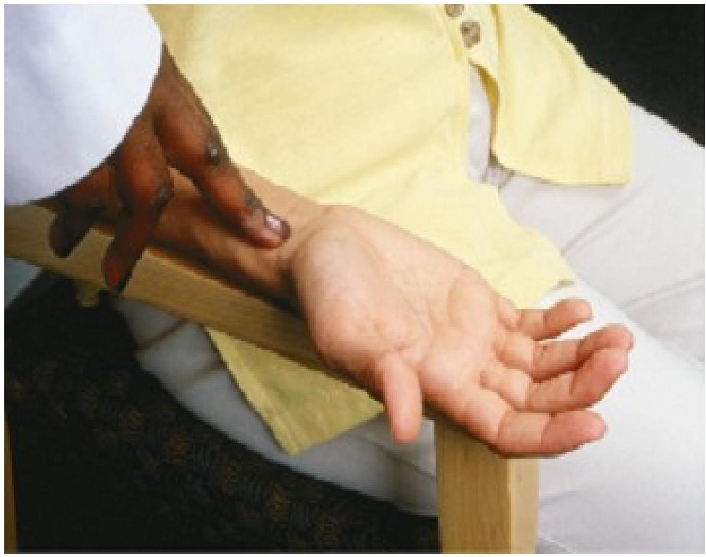
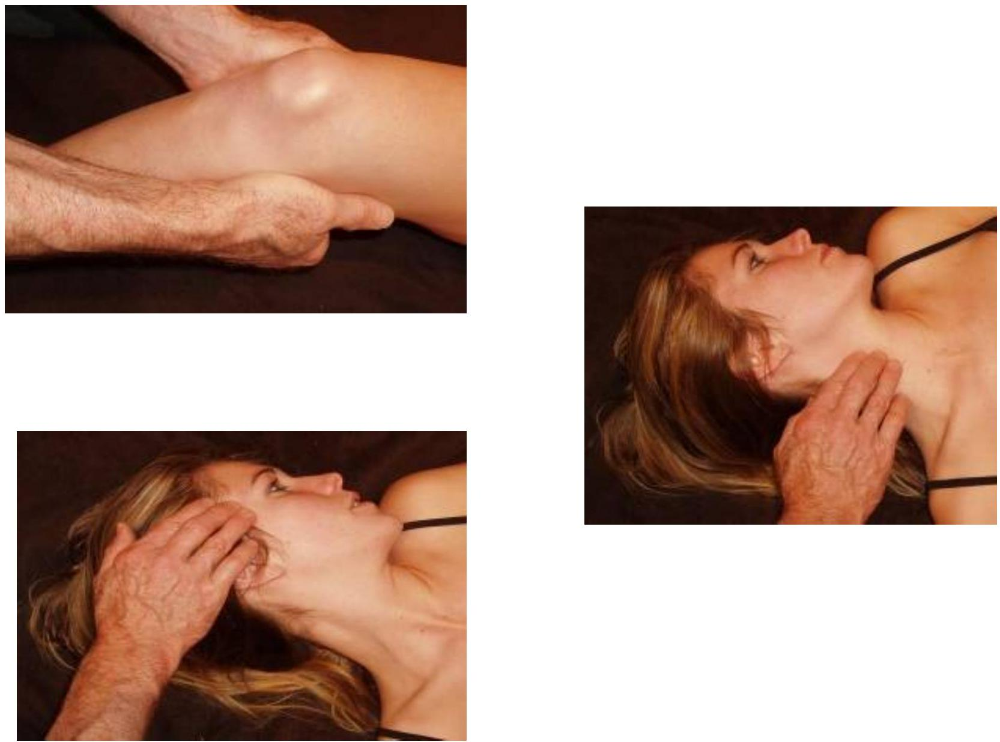
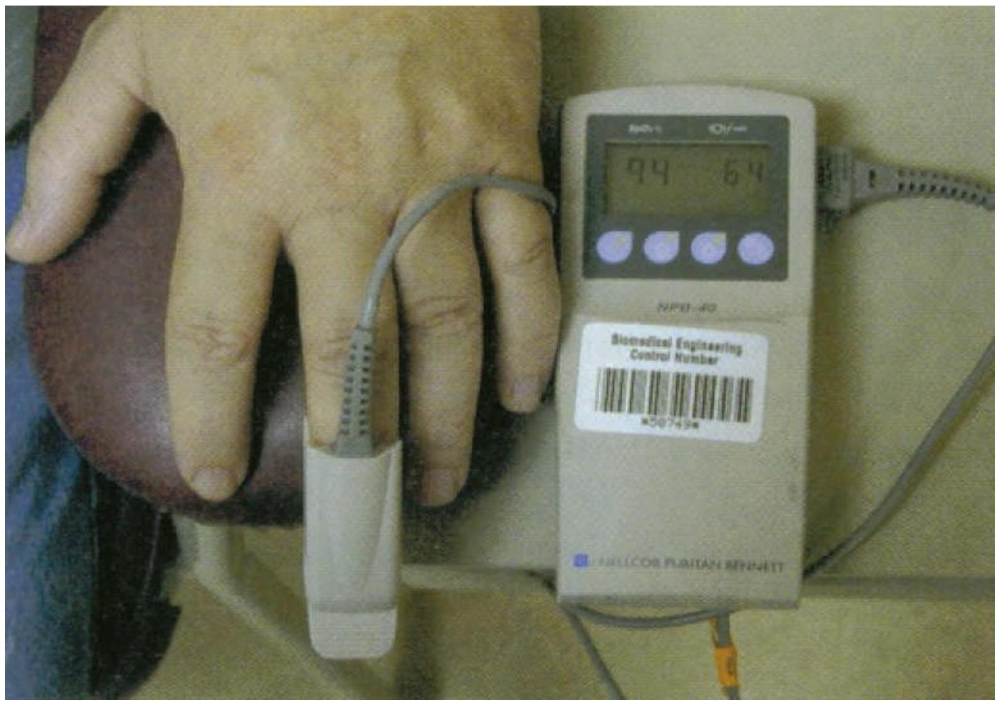
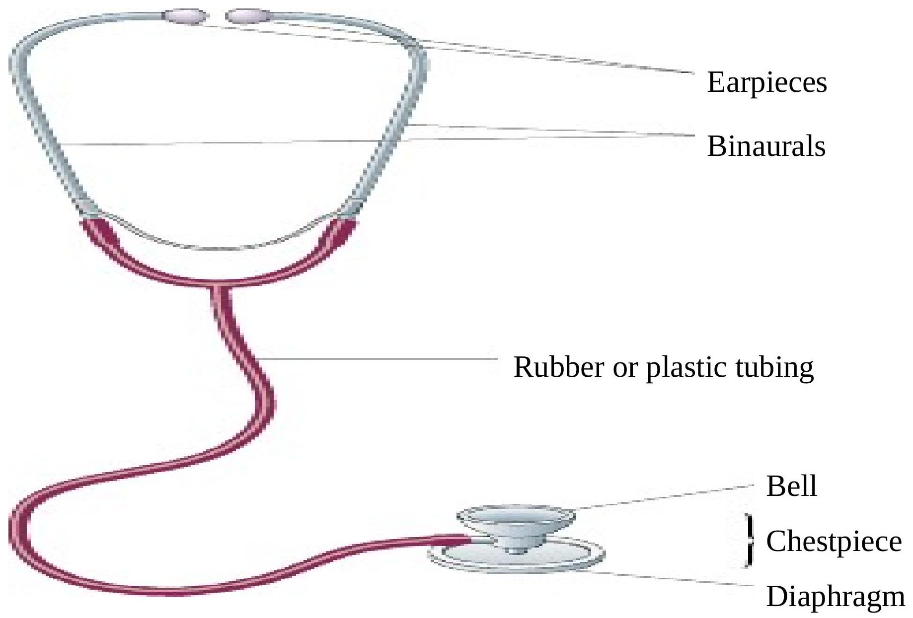

Vital Signs: Temperature, Pulse, Respirations, and Blood Pressure
Introduction to Vital Signs
Vital or cardinal signs are temperature, pulse, respiration and blood pressure.
Monitoring a client's vital signs should not be an automatic or a routine procedure; it should be a thoughtful, scientific assessment.
When and how often to assess a specific client's vital signs are chiefly nursing judgments, depending on the client's health status.
Vital signs are objective measurements of the patient's most basic body function.
A change in vital signs can be a strong indicator of a decline in the patient's health status.
When a nurse observes a patient's abnormal vital signs, the nurse must precisely document the specific variation, such as fever, blood pressure spike, or depressed respiration, and also the specific action taken to address the condition.
Observation is "looking and listening to the subjective and objective information that the patient provides".
The vital role of nurses is not just data collectors, but interpreters of multiple and complex patient data gathered in context of the whole picture presented by the patient.
Time to Assess Vital Signs
- On admission to provide a baseline which can be compared with subsequent measurements, thereby providing objective data and trends.
- When a client has a change in the health status or reports symptoms such as chest pain.
- Before and after surgery or an invasive procedure
- Before and/ or after administration of medication
- Before and after any nursing intervention that could affect the vital signs e.g ambulating a client who has been on bedrest.
Observation Chart
Temperature
The system that regulates body temperature has three main parts:
- Sensors in the skin
- An integrator in the hypothalamus
- An effector system that adjusts the production and loss of heat.
Types of thermometers
Several types of thermometers:
- Electronic/Digital
- Mercury, Glass
Care of clinical thermometer
- consists of glass tube
- should be immersed in antiseptic solution to prevent infection
- Shake it before using it to bring the mercury down.
- Never hold the thermometer at the bulb, because the hand may cause inaccurate reading.
- Cleaning the thermometer with hot water should be avoided since, it will cause mercury to expand more and may break the thermometer.
Factors affecting body temperature
- Age - As people age they become more sensitive to extremely hot or cold environments, which can affect body temperature
- Diurnal variations (circadian rhythms) - in health, a person's temperature fluctuates throughout the day
- Exercise - increases heat production, which results in an increased body temperature.
- Hormones - During ovulation, for example, women's temperatures can be raised
- Stress
- Environment - Environmental climates where individuals are exposed to extreme temperature conditions may result in them developing heat stroke or hypothermia.
- Hot and cold food and drink may affect temperature
Methods of Taking Temperature
- Axillary, under the armpit. This method provides the least accurate results.
- Orally, under the tongue. This method is never used with infants or very young children because they may accidentally bite or break the thermometer.
- Rectally, inserted into the rectum. This method provides the most accurate recording of the temperature. It is most often used for infants.
- Tympanic, in the tympanic membrane. Used mostly for infants
Tympanic Temperature
- Tympanic thermometers are inserted in the ear canal
- A disposable ear tip should be used
Oral Temperature
Do not use an oral thermometer for an individual, who has a history of seizures, breathes through his or her mouth, has just had oral surgery, or is unconscious.
- Wait at least 15 minutes after eating, drinking, or smoking
- Place under tongue in either pocket just off-center in lower jaw
Rectal Temperatures
- Standard precaution - gloves
- Patient is positioned on side (left side preferred) or stomach
- Lubricate tip of thermometer
- Slowly and gently insert tip into anus
- 1/2 inch for infants
- 1 inch for adults
- Hold thermometer in place while temperature is taken
Axillary Temperatures
- Place patient in seated or lying position
- Place tip of thermometer in middle of axilla with shaft facing forward
- Probe must touch skin on all sides
Temporal Temperatures
- Temporal scanner
- Noninvasive, quick
- Stroke scanner across forehead, crossing over the temporal artery
Reading temperatures
- By degree
- Place thermometer at eye level and look for silver line of mercury
- Never place fingers on bulb of thermometer as this might change the value
- A normal body temperature taken orally is $98.6^{\circ} \text{F } (37^{\circ} \text{C})$, with a range of $97.8-99.1^{\circ} \text{F } (36.5-37.2^{\circ} \text{C})$.
- A fever is a temperature of $101^{\circ} \text{F } (38.3^{\circ} \text{C})$ or higher in an infant younger than three months or above $102^{\circ} \text{F } (38.9^{\circ} \text{C})$ for older children and adults.
- Hypothermia is recognized as a temperature below $96^{\circ} \text{F } (35.5^{\circ} \text{C})$.
Converting Celsius to Fahrenheit
- ${ }^{\circ} \text{F}$ to ${ }^{\circ} \text{C}$: Deduct 32, then multiply by 5, then divide by 9
- ${ }^{\circ} \text{C}$ to ${ }^{\circ} \text{F}$: Multiply by 9, then divide by 5, then add 32
- Fahrenheit to Celsius: $(^{\circ} \text{F} - 32) / 1.8 = { }^{\circ} \text{C}$
- Celsius to Fahrenheit: ${ }^{\circ} \text{C} \times 1.8 + 32 = { }^{\circ} \text{F}$
Alterations in body temperature
PYREXIA
- Intermittent - the body alternates at regular intervals between periods of fever, normal and subnormal temperatures.
- Remittent - wide range of temperature fluctuation within 24 hr period, all of which are above normal.
- Relapsing - short febrile periods of a few days are interspersed with periods of 1 or 2 days of normal temperature.
- Constant - the body temperature fluctuates minimally but always remains above normal.
Nursing Interventions for Clients with Fever
- Monitor vital signs
- Assess skin colour and temperature
- Monitor WBC, hematocrit value and other pertinent laboratory reports for indications of dehydration or infections
- Remove excess blankets when the client feels warm
- Provide adequate nutrition and fluids to meet increased metabolic demands to prevent dehydration
- Measure intake and output
- Reduce physical activity to limit heat production
- Administer antipyretics as ordered
- Provide oral hygiene to keep the mucous membranes moist
- Provide tepid sponge bath to increase heat loss through conduction
- Provide dry clothing and bed linen
Hypothermia
Is a core body temperature below the lower limit of normal.
The three physiologic mechanisms of hypothermia are:-
- Excessive heat loss
- Inadequate heat production
- Impaired hypothalamic thermoregulation
Hypothermia may be induced or accidental.
Nursing Interventions for Clients with Hypothermia
- Provide a warm environment
- Provide dry clothing
- Apply warm blankets
- Keep limbs close to the body
- Cover the client's scalp with a cap or a turban
- Supply warm oral or intravenous fluids
- Apply warming pads
Pulse
Is a wave of blood created by contraction of the left ventricle of the heart.
Pulse wave represents the stroke volume output and the amount of blood that enters the arteries with each ventricular contraction.
In a healthy person, the pulse reflects the heart beat.
Taking pulse
The pulse can be recorded anywhere that a surface artery runs over a bone.
To measure a pulse, one should place the index, middle, and ring fingers over the radial artery. It is located above the wrist, on the anterior or front surface of the thumb side of the arm.
Gentle pressure should be applied, taking care to avoid obstructing blood flow.
The rate, rhythm, strength, and tension of the pulse should be noted.
Gently place 2 fingers on the artery.
Do not use your thumb, because it has its own pulse that can be felt.
Count the beats for one minute
 Pulse Sites
- Temporal - when radial pulse is not accessible
- Carotid - in cases of cardiac arrest
- Apical - routinely for infants and children upto 3 years, determine discrepancies with radial pulse
- Brachial - to measure blood pressure
- Radial - readily accessible
- Femoral - in cases of cardiac arrest
- Popliteal - determine circulation of the lower leg
- Posterior tibial - determine circulation of the foot
- Dorsalis pedis - determine circulation of the foot
Pulse oximeter
Assessment of Pulse
Strength of pulse
- weak or 1+ beats of poor force
- strong or 2+ beats of moderate force[easily felt]
- bounding or 3+ beats of strong force
- thready-- beats are barely felt
- absent
Rhythm
- Tachycardia- faster than 100 beats/ min
- Bradycardia-slower than 60 beats/ min
- Dysrhythmia--irregular rhythm
Factors Affecting the Pulse
- Age
- Gender
- Exercise
- Fever
- Medications e.g digitalis
- Hypovolaemia
- Stress
- Position changes
- Pathology
Respirations
Respiration is the act of breathing.
Purpose: To Exchange O2-CO2 in lungs/ tissues
Ventilation-movement of air in & out of lungs
However, we count respirations.
Measure:
- Rate, rhythm, depth, effort of breathing
Normal:
- Rate - $16-20 / \text{min}$; regular rhythm;
- Depth- subjectively measured as shallow, normal, or deep
- Effort - no effort; unlabored.
An examiner's fingers should be placed on the person's wrist, while the number of breaths or respirations in one minute is recorded.
Every effort should be made to prevent people from becoming aware that their breathing is being checked.
Respirations are quiet, slow, and shallow when the adult is asleep, and rapid, deeper, and noisier during and after activity.
Average respiration rates at rest are:
- infants, 34-40 per minute
- children five years of age, 25 per minute
- older children and adults, 16-20 per minute
Tachypnea is rapid respiration above 20 per minute.
Rhythms/ Breathing patterns
- Eupnea- normal rate & rhythm
- Tachypnea- rapid breathing, rate > 20/min
- Bradypnea- slow breathing, rate < 16/min
- Dyspnea- difficult or labored breathing
- Apnea- absence of breathing
- Orthopnea- inability to lie down to breathe
Factors Affecting Respiration
- Carbon Dioxide - Too much $\text{CO}_2$ increases respiration rate, because each breath pulls in oxygen and exhales carbon dioxide.
- Oxygen - oxygen concentration of the blood is monitored by small sensory organs called aortic bodies, and low oxygen concentration causes respiration rate to increase.
- Acid - Parts of the brain are very pH sensitive. Chemicals that make the blood basic are interpreted to mean that respirations should stop temporarily.
- Epinephrine - Anything that induces an adrenaline response causes breathing to become rapid.
- Acetylcholine - The neurotransmitter, acetylcholine acts to constrict airways and slow respiration. Because bringing air into the lungs is drying and because oxygen is capable of damaging cells in excess, it's best for general health if an animal doesn't breathe any more than necessary.
Blood Pressure
Blood Pressure (BP) is the lateral force on the walls of artery by the pulsing blood under pressure from the heart. The heart' s contraction forces blood under high pressure into the aorta.
The peak of maximum pressure when ejection occurs is the systolic blood pressure. When the ventricles relax, the blood remaining in the arteries exerts a minimum a diastolic pressure.
Arterial blood pressure is the force exerted by the blood on the wall of a blood vessel as the heart pumps (contracts) and relaxes.
Systolic blood pressure is the degree of force when the heart is pumping (contracting).
The diastolic blood pressure is the degree of force when the hearts relaxed.
Sphygmomanometer
Stethoscope
The stethoscope is an instrument for listening to sounds within the body.
Body sounds can be heard at the skin's surface and transported via enclosed columns of air to the ear.
In order to take the blood pressure, the stethoscope diaphragm is applied directly over the brachial pulse pressure point (inner arm).
The diaphragm headpiece should be applied with light pressure (heavy pressure will distort the artery and produce sounds below the true diastolic) so that there is no air between the skin and the stethoscope.
In using stethoscopes with bent ear tips, the ear tips should point forward toward the nose.
Monitoring Blood pressure
Purposes:
- To aid in the diagnosis of the patient's condition
- To guide in his treatment.
- To evaluate the patient's progress.
Indications:
- New patients.
- Pre and post operative patients.
- Antenatal and post natal patients.
- Patients with shock and haemorrhage.
- Patients with cardiac conditions and hypertension
- Patients with neurological disorders.
General Instructions:
- See that the patient is relaxed and is a comfortable position.
- Record pulse along with blood pressure.
- Blood pressure is taken at the same arm, same time, same posture daily.
Blood Pressure Classification
| Classification | SBP (mm Hg) | DBP (mmHg) |
|---|---|---|
| Normal | <120 | <80 |
| Pre-hypertension | 120-139 | 80-89 |
| Grade 1 | 140-159 | 90-99 |
| Grade 2 | 160-179 | 100-109 |
| Grade 3 | >/=180 | >/=110 |
Procedure for Taking Blood Pressure
- CHECK THE EQUIPMENT. Do not use if any problems are found.
- Look to see that the gauge - mercury meniscus or aneroid needle is at zero
- Check the cuff for any breaks in stitching or tears in the fabric.
- Check the rubber tubing for cracks or leaks, especially at connections.
- Be sure three sizes of cuffs are accessible (small, regular, and adult large).
- PLACE THE MANOMETER so it can be viewed straight on and within 15 inches of the viewer.
- RIGHT ARM will be used when possible. Upper arm should be bare and unconstricted by clothing
- SELECT THE APPROPRIATE SIZE CUFF. The bladder width should equal at least 40% of the circumference of the upper arm, and the length of the bladder should be 80% of the circumference of the arm, but no more than 100%.
- PALPATE the location of the brachial artery (on the upper arm's inner aspect).
- POSITION the center of the cuff's bladder over the brachial artery.
- APPLY THE CUFF evenly and snugly one-inch (2.5 cm) above the antecubital fossa (bend of arm).
- POSITION THE ARM so the cuff is at heart level. The arm should rest firmly supported on a table, slightly abducted and bent, with palm up.
- For the first reading only,
- Palpate the radial artery pulse.
- Inflate the cuff to the point where the pulse can no longer be felt.
- Slowly deflate the cuff, noting on the gauge the point where the pulse reappears/can again be felt. This is the estimated systolic pressure. Rapidly deflate the cuff. Wait at least 15-30 seconds before re-inflating the cuff to begin the first auscultatory measurement. (This allows good circulation to be reestablished.)
- CHECK THE CLIENT'S POSITION. Legs should be uncrossed, feet resting firmly on the floor and the back supported while blood pressure is being measured.
- INSERT the stethoscope earpieces, angled forward to fit snugly.
- PLACE THE BELL OR THE DIAPHRAGM HEAD of the stethoscope lightly over brachial artery at the bend of the elbow, but with good skin contact. Avoid too much pressure, which can close off the vessel and distort the sounds, therefore altering the reading. (The bell head is preferred because it permits more accurate auscultation of the Korotkoff sounds than the diaphragm, especially in the interpretation of diastolic readings.)
- INFLATE the cuff as rapidly as possible to maximum inflation level (MIL).
- DEFLATE THE CUFF SLOWLY and CONSISTENTLY at the rate of 2 mm per pulse beat. The rate of deflation should be slow enough to accurately evaluate the exact millimeter marking of the Korotkoff sounds. Once deflation has begun, never reinflate.
- NOTE where the first sharp rhythmic sound appears in relation to the number or markings on the gauge. This is the systolic pressure.
- CONTINUE DEFLATION at the established rate. NOTE on the gauge where the last sound is heard. This is the diastolic pressure in adults.
- CONTINUE DEFLATION for 10 mm Hg past the last sound. (This assures that the absence of sound is not a "skipped" beat but is the true end of the sound.) Then deflate the cuff rapidly and completely.
Korotkoff's Sounds
Measurement of blood pressure by auscultation is based on the sounds produced as a result of changes in blood flow, termed Korotkoff's sounds, and are:
- Phase I The pressure level at which the first faint, clear tapping sounds are heard, which increase as the cuff is deflated (reference point for systolic BP).
- Phase II During cuff deflation when a murmur or swishing sounds are heard.
- Phase III The period during which sounds are crisper and increase in intensity.
- Phase IV When a distinct, abrupt, muffling of sound is heard
- Phase V The pressure level when the last sound is heard (reference point for diastolic BP).
Factors affecting blood pressure
- Peripheral resistance
- blood vessel diameter - Smaller diameter, same volume, more pressure.
- blood viscosity - The more viscous the blood, the greater resistance it encounters and the higher the blood pressure.
- Vessel elasticity - The elastic recoil of the vessel then maintains the continued flow of blood during diastole.
- Blood volume - When there is a greater volume of fluid, more fluid presses against the walls of the arteries resulting in a greater pressure.
- Cardiac output - An increase in cardiac output results in increased blood pressure.
Factors that can affect blood pressure reading
- Blood Pressure Cuff is too Small - Studies have shown that using too small of a blood pressure cuff can cause a patient's systolic blood pressure measurement to increase 10 to 40 mmHg .
- Blood Pressure Cuff Used Over Clothing- Studies have shown that clothing can impact a systolic blood pressure from 10 to 50 mmHg .
- Not Resting 3-5 minutes - Any activities such as exercise or eating can affect systolic blood pressure measurement 10 to 20 mmHg .
- Arm/Back/Feet Unsupported - When having your blood pressure measured, you should always be seated in a comfortable chair, legs uncrossed, with your back and arm supported. These differences can increase/decrease systolic blood pressure 2 mmHg for every inch above/below your heart level.
- Emotional State - Stress or anxiety can cause large increases in blood pressure.
- Talking - studies have shown that systolic blood pressure measurement may increase 10 to 15 mmHg .
- Smoking- Tobacco products all contain nicotine which will temporarily increase blood pressure.
- Alcohol/Caffeine- Alcohol and caffeine consumption causes blood pressure levels to spike.
- Temperature- Blood pressure tends to increase when you are cold.
Avoid measurement in an arm if:
- Injury or blocked artery is present
- History of mastectomy on that side
- Implanted device is under the skin
Common Causes of Blood Pressure Measurement Errors
- Systematic error is most often due to a lack of concentration or poor hearing. It may result in confusion of auditory and visual cues or misreading of the Korotkoff sounds.
- Terminal digit preference refers to the tendency for an observer to record the pressure reading to A convenient digit, such as zero diagnosis and treatment.
- Observer prejudice or bias implies that an observer adjusts the observed pressure to meet his/her preconceived notion of what the pressure "should be."
- Equipment Errors
- Patient Preparation Errors
Correcting Blood Pressure Errors
- Patient preparation
- Selecting proper cuff size
- Estimating systolic blood pressure
- Recording average blood pressure (instead of a single measurement)
- Eliminating terminal digit bias
- Maintaining and calibrating equipment
General Procedure for Taking Vital Signs
Equipments required:
- Oral/ axilla / rectal thermometer (1)
- Stethoscope (1)
- Sphygmomanometer with appropriate cuff size (1)
- Watch with a second hand (1)
- Spirit swab or cotton (1)
- Sponge towel (1)
- Receiver (2): for clean (1) for discard (1)
- Record form
- Ball- point pen: blue / black (1) red (1)
- Steel tray (1): to set all materials
Before beginning any procedure:
- Have equipment clean and ready
- Wash hands
- Identify the person
- Introduce yourself if necessary
- Go to a private or quiet area
- Explain the procedure
- Document your results
Critical Thinking in Vital Signs Assessment
- IDENTIFY - Identifies abnormal vital signs as profoundly or moderately abnormal; accurately describes client condition, Identifies possible cause of abnormal vital
- GATHER - Assesses client appropriately to include peripheral pulses, HR, skin condition for pallor and moisture, altered LOC, temp and /or O2 sat; Identifies possible cause of abnormal vital signs;
- EXAMINE - Prioritizes pertinent assessment data for specific client; Reflects on possible causes of abnormal vital signs; validates by using manual equipment for abnormal BP
- FORMULATE - Develops a plan for correcting abnormal vital signs; Analyzes pros and cons of plan for potential outcomes
- APPLY - Notifies the team members for client abnormal vital signs with each occurrence; implements plan to improve abnormal vital signs with accuracy and without hesitation; documents actions, client responses and outcomes
- EVALUATE - Reflects on other avenues of planning after completion and discussions with peers in post conference; request feedback from staff and faculty to improve the process; accurately assesses and reassesses client as needed; Utilizes this learning experience in other client settings.